for a resilient ocean
KREN
INSIGHT
연재, 기고, 분석을 시간 순서로 기록합니다.
CLIF · 연재 13편 완결
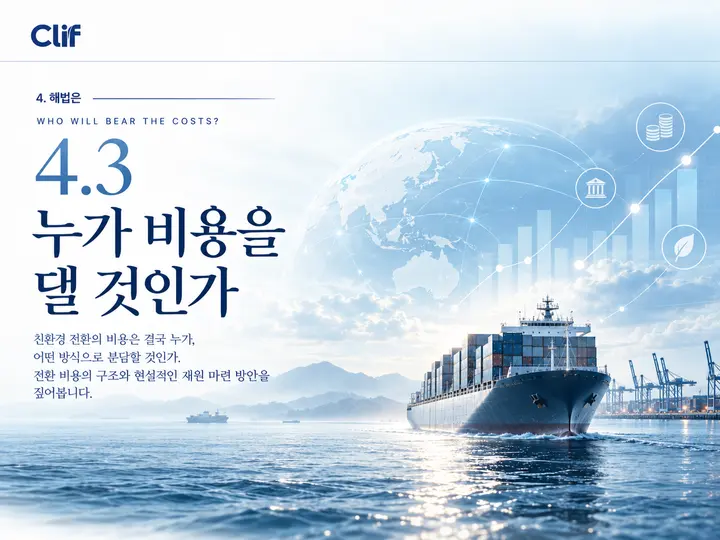
4-3누가 비용을 댈 것인가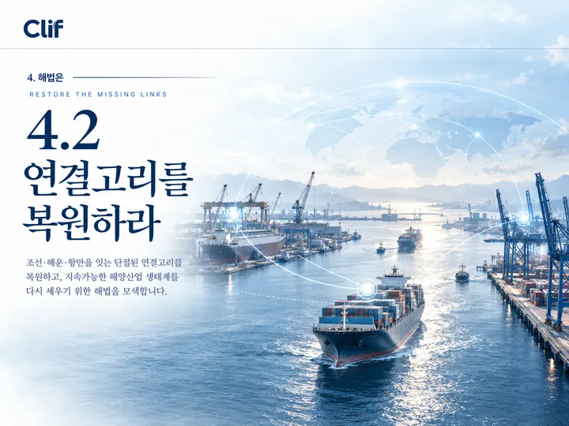
4-2연결고리를 복원하라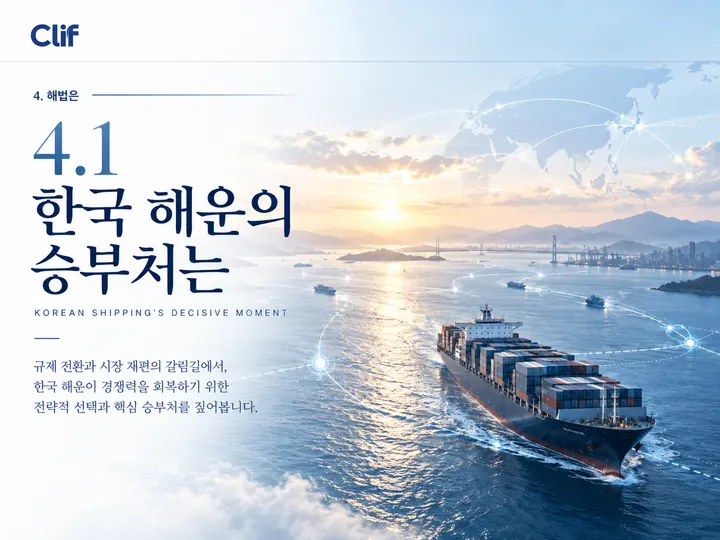
4-1한국 해운의 승부처는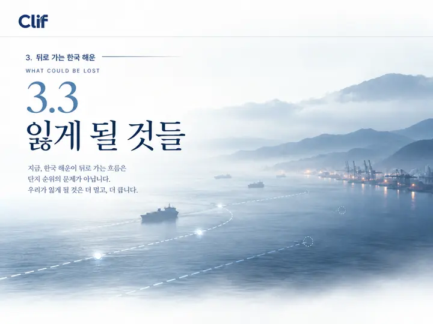
3-3잃게 될 것들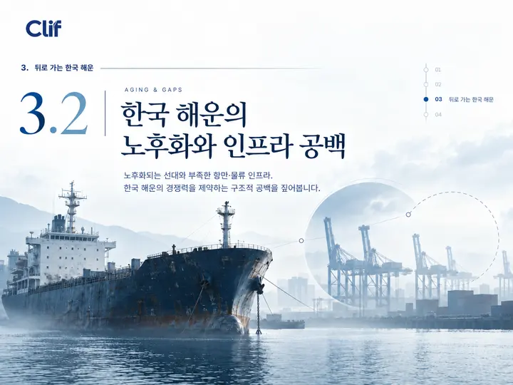
3-2한국 해운의 노후화와 인프라 공백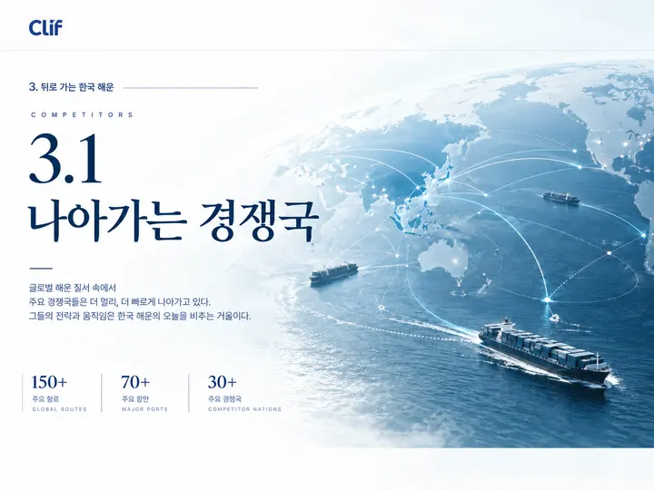
3-1나아가는 경쟁국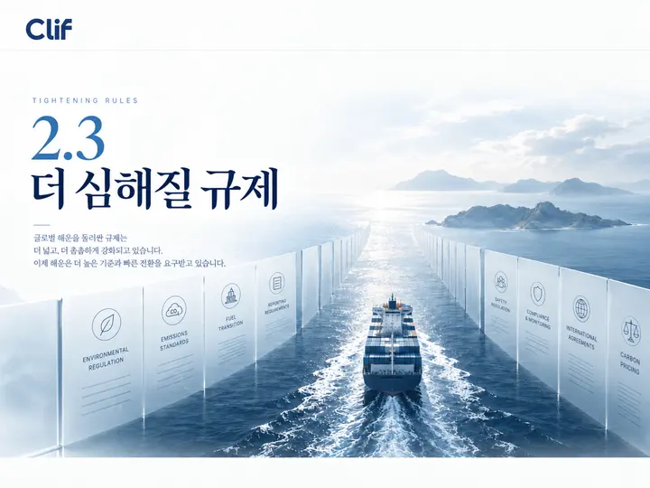
2-3더 심해질 규제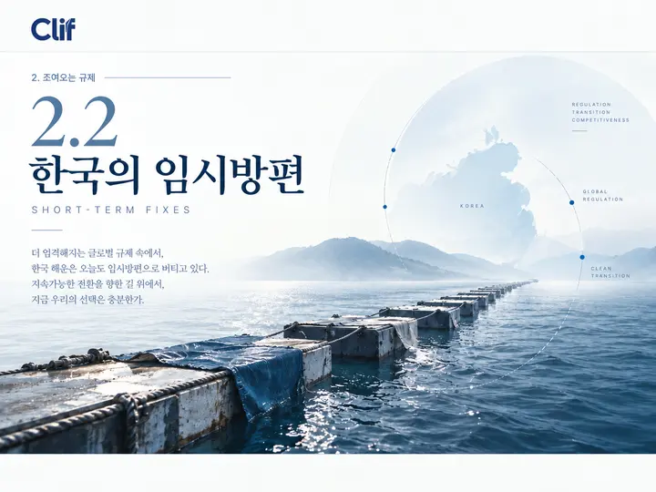
2-2한국의 임시방편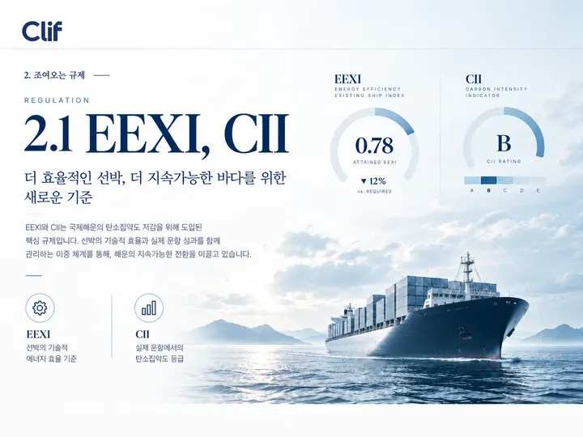
2-1EEXI, CII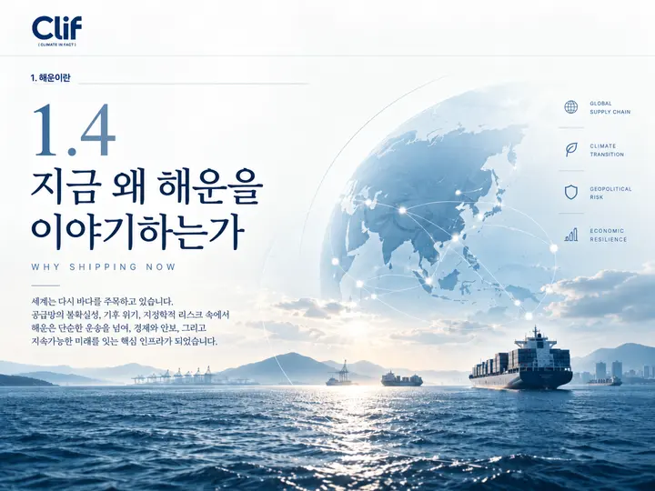
1-4지금 왜 해운을 이야기하는가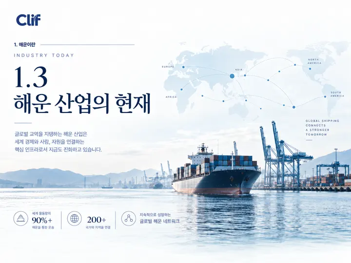
1-3해운 산업의 현재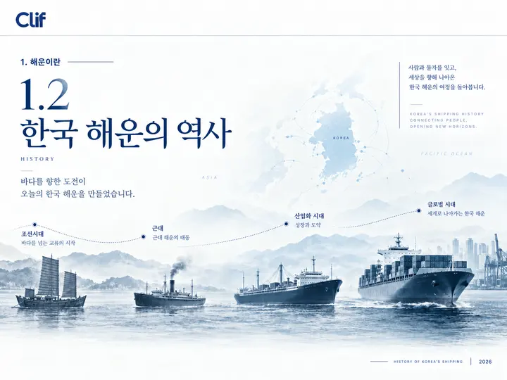
1-2한국 해운의 역사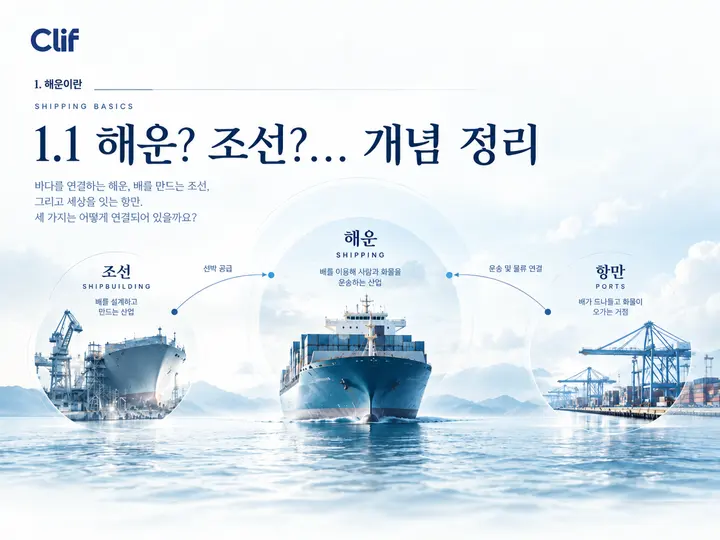
1-1해운? 조선? 개념 정리IMPACT ON · 플랜잇의 전환이야기
OPEN SOURCE
연재와 보고서의 숫자는 아래 모델과 계산기에서 나왔습니다. 가정, 계수, 수식을 누구나 확인하고 다시 돌려볼 수 있도록 저장소를 엽니다.
CII · EU ETS · FuelEU · EEXI
선박 한 척의 등급과 규제 비용. 규정 원문의 식과 기본값을 그대로 옮겼습니다.
JavaScript라이선스 미정
감축 조치 시나리오
감속, 연료 전환, 육상전원, 배터리를 조합해 비용과 회수기간을 비교합니다.
JavaScript라이선스 미정
WtT · TtW · WtW
FuelEU와 IMO LCA 지침 기본값으로 연료별 전과정 배출을 계산합니다.
JavaScript라이선스 미정
세계 선대 연료·배출
IMO 연례 DCS 집계를 연도별로 시각화합니다.
JavaScript라이선스 미정
선대 단위 비용 모델
IMO 넷제로 프레임워크 초안 기준 선대의 연도별 준수비용을 계산합니다.
Python · Excel라이선스 미정
지역경제 파급효과
중형 조선소 녹색전환의 생산·부가가치·고용 효과를 산업연관표로 계산합니다.
Python · Excel라이선스 미정